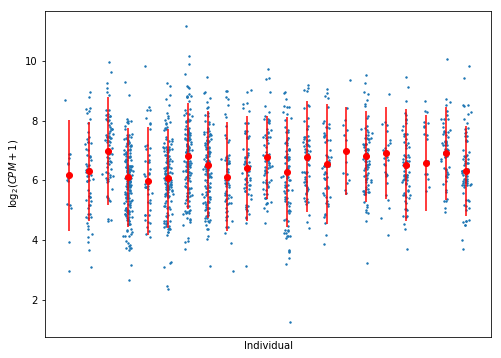

Hurdle model estimation
Table of Contents
Introduction
The key idea of voom (Law et al 2014) is that the distribution of
log-transformed counts per million is approximately Gaussian. Consider the
expression of a single gene in individual \(i\), cell \(j\).
\[ r_{ij} = \mbox{number of reads} \]
Assuming \(r_{ij}\) follows the NB2 negative binomial model (Hilbe 2012):
\[ E[r_{ij}] = \lambda_{ij} \] \[ V[r_{ij}] = \lambda_{ij} + \phi_{ij} \lambda_{ij}^2 \]
Let \(L_j\) be the library size of cell \(j\). Then, by the definition of CPM:
\[ y_{ij} = \log_2(10^6 \times \frac{r_{ij}}{L_j} + 1) \]
\[ = \log_2\left(10^6 \times \left(r_{ij} + \frac{L_j}{10^6}\right)\right) - \log_2(L_j) \]
Assuming that \(L_j \ll 10^6\):
\[ y_{ij} \approx \log_2(r_{ij}) - \log_2(L_j) + 6 \log_2(10) \]
By first order Taylor expansion:
\[ E[y_{ij}] = \mu_{ij} \approx \log_2 \lambda_{ij} + \mathrm{const} \]
By the delta method:
\[ V[y_{ij}] = \sigma_{ij}^2 \approx V[r_{ij}] / \lambda_{ij}^2 = 1/\lambda_{ij} + \phi_{ij} \]
We assume:
\[ y_{ij} \approx N(\mu_{ij}, \sigma^2_{ij}) \]
Now, we seek to write a hierarchical model for \(y\) in terms of the genotype of individual \(i\) to call mean and variance QTLs.
Our idea is to start from generalized linear models for the underlying rate and dispersion:
\[ \log \lambda_{ij} = X_i \beta_\lambda + u_i^\lambda + \epsilon^\lambda_{ij} \]
\[ \log \phi_{ij} = X_i \beta_\phi + u_i^\phi + \epsilon^\phi_{ij} \]
We assume errors are uncorrelated with \(X, \beta, u\) so we can write \(\sigma^2 = V[\epsilon_{ij}^\lambda] + V[\epsilon_{ij}^\phi]\)
Then, the likelihood of each data point is given by:
\[ y_{ij} \sim N(X_i \beta_\lambda + u_i^\lambda + \mathrm{const}, \exp(-(X_i \beta_\lambda + u_i^\lambda)) + \exp(X_i \beta_\phi + u_i^\phi) + \sigma^2) \]
In this model, between individual variance is explained by cis-genotype (\(X_i \beta_\lambda)\), unobserved factors (\(u_i^\lambda)\), and sampling (\(\epsilon_{ij}^\lambda\)).
Within individual variance is explained by the rate of expression (as derived above), cis-genotype (\(X_i \beta_\phi\)), unobserved factors (\(u_i^\phi\)), and sampling (\(\epsilon_{ij}^\phi\)).
Unobserved factors are needed to account for the fact that two individuals with the same genotype could still have different underlying rate and dispersion of expression, and that genes may not be overdispersed (i.e. \(\beta_\phi = 0, u_i^\phi \rightarrow -\infty\)).
The key idea of mast (Finak et al 2015) is to model non-zero \(R\) using a
Gaussian distribution, and model zero \(R\) using logistic regression. We
modify the model accordingly:
\[ y_{ij} \mid y_{ij} > 0 \sim N(X_i \beta_\lambda + u_i^\lambda + \mathrm{const}, \exp(-(X_i \beta_\lambda + u_i^\lambda)) + \exp(X_i \beta_\phi + u_i^\phi) + \sigma^2) \]
We can estimate the posterior \(p(\beta, u \mid Y, \cdot)\) using a combination of black-box variational inference and variational EM.
Univariate test case
Look at the top eQTL SNP-gene pair from the bulk RNA-sequencing data,
rs73276049 and ZSWIM7.
symbol rsid effect_size beta_perm
ENSG00000214941 ZSWIM7 rs73276049 1.792670 1.567000e-17
ENSG00000145725 PPIP5K2 rs34822 1.155860 1.280260e-15
ENSG00000164978 NUDT2 rs7848476 0.998739 6.685150e-15
ENSG00000243317 C7orf73 rs6467603 1.371900 1.508780e-14
ENSG00000240344 PPIL3 rs13412214 -1.343370 1.566880e-14
Load the genotype data for rs73276049.
zgrep -wm1 "rs73276049" /project2/gilad/singlecell-qtl/bulk/genotypes.vcf.gz
genotypes = pd.Series("""<<extract-geno()>>"""[2:-2].split())
zcat /project2/gilad/singlecell-qtl/bulk/genotypes.vcf.gz | head -n1 | awk '{for (i=1; i <= NF; i++) {if (i > 9) {$i = "NA" $i}} print $0}'
genotypes.index = """<<extract-header()>>""".split()
Compute library sizes and CPM.
normalizers = (6 * np.log(10) - np.log(umi_qc.agg(np.sum))) / np.log(2)
data = {'onehot': onehot, 'genotypes': genotypes.T[sorted(annotations_qc['chip_id'].unique())].values.reshape(-1, 1), 'counts': umi_qc.loc['ENSG00000214941'].values.astype(np.float32).reshape(-1, 1), 'log_cpm': cpm(umi_qc, log2=True).loc['ENSG00000214941'].values.astype(np.float32).reshape(-1, 1), 'normalizers': normalizers.values.reshape(-1, 1)}
Write out the processed data to use as a test case.
with open('test_data.pkl', 'wb') as f: pickle.dump(data, f)
Plot the data, mean, and two standard deviations per individual (restricted to non-zero CPM values):
onehot_cpm = np.ma.masked_equal(data['log_cpm'] * data['onehot'], 0)
plt.clf() plt.gcf().set_size_inches(8, 6) plt.scatter(x=np.where(data['onehot'] == 1)[1] + np.random.normal(scale=0.1, size=data['onehot'].shape[0]), y=data['log_cpm'], s=2, alpha=0.5) plt.errorbar(x=np.arange(data['onehot'].shape[1]), y=onehot_cpm.mean(axis=0), yerr=2 * onehot_cpm.std(axis=0), fmt='o', c='red') plt.xlabel('Individual') plt.ylabel('$\log_2(CPM + 1)$') plt.gca().set_xticks([]) plt.gcf()

Use this block to load the data without loading/processing the entire counts matrix (requires much less memory).
with open('test_data.pkl', 'rb') as f: data = pickle.load(f)
Model specification and inference
We specify the model in Edward. We assume a fully factored variational approximation \(q(\beta_\lambda)q(\beta_\phi)q(u^\lambda)q(u^\phi)\).
Special care needs to be taken with the prior \(p(u^\phi)\) because the implied variance is too large if \(u^\phi = 0\).
nonzero_cpm = data['log_cpm'].ravel() > 0 q = nonzero_cpm.sum() m, n = data['onehot'].shape _, p = data['genotypes'].shape onehot = tf.placeholder(tf.float32, [q, n]) genotypes = tf.placeholder(tf.float32, [n, p]) cell_bias = tf.placeholder(tf.float32, [q, 1]) rate_bias_scale = tf.exp(tf.Variable(tf.ones([1]))) rate_bias = ed.models.Normal(loc=tf.zeros([n, 1]), scale=rate_bias_scale) rate_effect_scale = tf.exp(tf.Variable(tf.ones([1]))) rate_effect = ed.models.Normal(loc=tf.zeros([p, 1]), scale=rate_effect_scale) log_rate = tf.matmul(onehot, tf.matmul(genotypes, rate_effect) + rate_bias) mean = log_rate + cell_bias disp_bias_scale = tf.exp(tf.Variable(tf.ones([1]))) disp_bias = ed.models.Normal(loc=tf.fill([n, 1], -10.), scale=disp_bias_scale) disp_effect_scale = tf.exp(tf.Variable(tf.ones([1]))) disp_effect = ed.models.Normal(loc=tf.zeros([p, 1]), scale=disp_effect_scale) disp = tf.matmul(onehot, tf.matmul(genotypes, disp_effect) + disp_bias) resid_var_scale = tf.exp(tf.Variable(tf.constant(data['log_cpm'][nonzero_cpm].var()))) var = tf.exp(-log_rate) + tf.exp(disp) + resid_var_scale log_cpm = ed.models.Normal(loc=mean, scale=tf.sqrt(var)) q_rate_bias = ed.models.NormalWithSoftplusScale( loc=tf.Variable(tf.random_normal([n, 1])), scale=tf.Variable(tf.ones([n, 1]))) q_disp_bias = ed.models.NormalWithSoftplusScale( loc=tf.Variable(tf.random_normal([n, 1], mean=-10)), scale=tf.Variable(tf.ones([n, 1]))) q_rate_effect = ed.models.NormalWithSoftplusScale( loc=tf.Variable(tf.random_normal([p, 1], stddev=0.1)), scale=tf.Variable(tf.fill([p, 1], -8.))) q_disp_effect = ed.models.NormalWithSoftplusScale( loc=tf.Variable(tf.random_normal([p, 1], stddev=0.1)), scale=tf.Variable(tf.fill([p, 1], -8.)))
We optimize the evidence lower bound with respect to the variational parameters and model hyperparameters (scales) simultaneously using the reparameterization gradient and gradient descent.
inf = ed.ReparameterizationKLKLqp( latent_vars={ rate_effect: q_rate_effect, rate_bias: q_rate_bias, disp_effect: q_disp_effect, disp_bias: q_disp_bias, }, data={ onehot: data['onehot'][nonzero_cpm], genotypes: data['genotypes'], cell_bias: data['normalizers'][nonzero_cpm], log_cpm: data['log_cpm'][nonzero_cpm], })
inf.run(n_samples=10, n_print=1000, optimizer=tf.train.AdamOptimizer(learning_rate=5e-2))
1000/1000 [100%] ██████████████████████████████ Elapsed: 6s | Loss: 2314.966
Tabulate the estimated hyperparameters:
pd.DataFrame(
ed.get_session().run(
[resid_var_scale,
rate_effect_scale,
rate_bias_scale,
disp_effect_scale,
disp_bias_scale,
]),
index=['resid_var_scale',
'rate_effect_scale',
'rate_bias_scale',
'disp_effect_scale',
'disp_bias_scale'])
0
resid_var_scale 0.831836
rate_effect_scale [1.79292]
rate_bias_scale [0.944154]
disp_effect_scale [0.0327109]
disp_bias_scale [1.88607]
Compute posterior 95% credible intervals for the effect sizes:
res = pd.DataFrame(np.hstack(ed.get_session().run( [q_rate_effect.mean(), 1.96 * tf.sqrt(q_rate_effect.variance()), q_disp_effect.mean(), 1.96 * tf.sqrt(q_disp_effect.variance())])), columns=['rate_effect_mean', 'rate_effect_ci', 'disp_effect_mean', 'disp_effect_ci']) res
rate_effect_mean rate_effect_ci disp_effect_mean disp_effect_ci 0 1.794225 0.075665 -0.000046 0.06413
Estimate posterior 95% credible intervals for the bias terms:
res = pd.DataFrame(np.hstack(ed.get_session().run( [q_rate_bias.mean(), 1.96 * tf.sqrt(q_rate_bias.variance()), q_disp_bias.mean(), 1.96 * tf.sqrt(q_disp_bias.variance())] ))) plt.clf() fig, ax = plt.subplots(2, 1) ax[0].errorbar(x=res.index, y=res[0], yerr=res[1], fmt='o') ax[0].set_xticks([]) ax[0].set_xlabel('') ax[0].set_ylabel('Rate bias') ax[1].errorbar(x=res.index, y=res[2], yerr=res[3], fmt='o') ax[1].set_xticks([]) ax[1].set_xlabel('Individual') ax[1].set_ylabel('Dispersion bias') plt.gcf()

Plot a posterior predictive draw, and the real data means and twice standard deviations.
post_pred = ed.get_session().run( ed.copy(log_cpm, inf.latent_vars), { onehot: data['onehot'][nonzero_cpm], genotypes: data['genotypes'][:,0:1], cell_bias: data['normalizers'][nonzero_cpm], log_cpm: data['log_cpm'][nonzero_cpm], }) plt.clf() plt.gcf().set_size_inches(8, 6) plt.scatter(x=np.where(data['onehot'][nonzero_cpm] == 1)[1] + np.random.normal(scale=0.1, size=q), y=post_pred, s=2) plt.errorbar(x=np.arange(n), y=onehot_cpm.mean(axis=0), yerr=2 * onehot_cpm.std(axis=0), fmt='o', c='red') plt.xlabel('Individual') plt.ylabel('$\log_2(CPM + 1)$') plt.gca().set_xticks([]) plt.gcf()

Investigate the terms of the variance model to understand why the posterior predictive distribution has larger variance than the original data. Compare the sample variance of non-zero CPM between cells within each individual to the estimated variance (plugging in the estimated posterior means into the model).
pd.DataFrame(np.hstack([
onehot_cpm.var(axis=0).filled().reshape(-1, 1),
ed.get_session().run(tf.exp(-tf.matmul(genotypes, q_rate_effect.mean()) - q_rate_bias.mean()), {onehot: data['onehot'][nonzero_cpm], genotypes: data['genotypes'], cell_bias: data['normalizers'][nonzero_cpm]}),
ed.get_session().run(tf.exp(tf.matmul(genotypes, q_disp_effect.mean()) + q_disp_bias.mean()), {onehot: data['onehot'][nonzero_cpm], genotypes: data['genotypes'], cell_bias: data['normalizers'][nonzero_cpm]})
]), columns=['sample_var', 'mean_component', 'disp_component'])
sample_var mean_component disp_component 0 0.871253 0.303846 0.000045 1 0.685687 0.278786 0.000045 2 0.832976 0.174248 0.000046 3 0.700838 0.196059 0.000044 4 0.814616 0.268586 0.000044 5 0.691467 0.330452 0.000044 6 0.783659 0.194654 0.000046 7 0.802240 0.146926 0.000047 8 0.834025 0.244478 0.000046 9 0.772049 0.241288 0.000045 10 0.473087 0.139420 0.000046 11 0.849796 0.283829 0.000045 12 0.866909 0.147805 0.000046 13 1.008157 0.181169 0.000045 14 0.534548 0.148885 0.000045 15 0.577289 0.145060 0.000046 16 0.592843 0.178472 0.000045 17 0.868248 0.243828 0.000045 18 0.643367 0.188713 0.000046 19 0.610603 0.143450 0.000045 20 0.561710 0.255773 0.000045
Prior predictive check
Check whether the prior is sensible by generating new data from the prior.
prior_pred = ed.get_session().run( ed.copy(log_cpm, {}), { onehot: data['onehot'][nonzero_cpm], genotypes: data['genotypes'][:,0:1], cell_bias: data['normalizers'][nonzero_cpm], log_cpm: data['log_cpm'][nonzero_cpm], }) plt.clf() plt.gcf().set_size_inches(8, 6) plt.scatter(x=np.where(data['onehot'][nonzero_cpm] == 1)[1] + np.random.normal(scale=0.1, size=q), y=prior_pred, s=2) plt.errorbar(x=np.arange(n), y=onehot_cpm.mean(axis=0), yerr=2 * onehot_cpm.std(axis=0), fmt='o', c='red') plt.xlabel('Individual') plt.ylabel('$\log_2(CPM + 1)$') plt.gca().set_xticks([]) plt.gcf()

Multivariate test case
onehot = pd.read_table("/scratch/midway2/aksarkar/singlecell/onehot-qc.txt.gz", sep=' ', index_col=0) header = pd.read_table('/project2/gilad/singlecell-qtl/bulk/genotypes.vcf.gz', nrows=1) vcf = tabix.open('/project2/gilad/singlecell-qtl/bulk/genotypes.vcf.gz') genotypes_df = (pd.DataFrame(list(vcf.query('chr17', 15879874 - int(1e6), 15903031 + int(1e6))), columns=header.columns) .set_index('ID') .rename(columns=lambda x: 'NA{}'.format(x) if x.startswith('1') else x) .align(onehot, axis=1, join='inner')[0] .astype(np.float32) .transform(lambda x: x - x.mean(), axis=1) .fillna(0.)) data['genotypes'] = genotypes_df.values.T
inf.run(n_samples=10, n_iter=5000, n_print=5000, optimizer=tf.train.AdamOptimizer(learning_rate=1e-2))
2000/2000 [100%] ██████████████████████████████ Elapsed: 22s | Loss: 2615.818
0
resid_var_scale 1.194719
rate_effect_scale 0.014356
rate_bias_scale 1.563909
disp_effect_scale 0.028698
disp_bias_scale 3.358373
Compute local false sign rate using the model posterior.
_cdf = scipy.stats.norm().cdf def lfsr(mean, var): neg_prob = _cdf(-mean / np.sqrt(var)) pos_prob = 1 - neg_prob return np.minimum(pos_prob, neg_prob)
res = pd.DataFrame(np.hstack(ed.get_session().run( [q_rate_effect.mean(), tf.sqrt(q_rate_effect.variance()), q_disp_effect.mean(), tf.sqrt(q_disp_effect.variance())])), columns=['rate_effect_mean', 'rate_effect_var', 'disp_effect_mean', 'disp_effect_var'], index=genotypes_df.index) res['rate_effect_lfsr'] = lfsr(res["rate_effect_mean"], res["rate_effect_var"]) res['disp_effect_lfsr'] = lfsr(res["disp_effect_mean"], res["disp_effect_var"])
Top mean-effect QTLs (by lfsr)
res.sort_values('rate_effect_lfsr', ascending=True).head()
Top dispersion-effect QTLs (by lfsr)
res.sort_values('disp_effect_lfsr', ascending=True).head()
Next steps
- Do we need to worry about the residual variance estimate being incorrect?
- Do we need to worry about tuning the initialization?
- Do we need to fit a multivariate model? Doing inference one SNP at a time will be slow (6s per SNP). We should be able to fit a multivariate regression with the spike and slab prior in roughly the same amount of time. However, inference of the corresponding variational approximation is only guaranteed to find a SNP in LD with the causal variant (Carbonetto and Stephens 2012), and is known to overstate the confidence in its posterior inclusion probability (Park et al. 2016).
Do we need to actually fit a dropout model? The key idea of
mast(Finak et al 2015) is to model non-zero \(R\) using a Gaussian distribution, and model zero \(R\) using logistic regression.This can be easily be incorporated in the BBVI algorithm (although likely not in the Edward probabilistic programming language).
Incorporating the mean expression model as well as other known covariates into the dropout model might allow us to reliably estimate the mean parameters (i.e., reduce their posterior variance) even for genes with moderate levels of zero-inflation.
We might choose not to model zeros because
mastconditions on the observed \(Y = 0\), not on a latent \(Z = 0\). This means we could simply do the same and ignore zeros.If we did so, then mean/variance QTL effect size estimation will be less robust for genes with high dropout. This might not be a problem depending on the stringency of gene filtering.
For a single gene, do we need to worry about mean QTLs in LD with variance QTLs? We previously built multivariate mean/variance QTL models which could account for LD, and could share information between the mean and variance models.
The fundamental problem is that if we assume that the mean and dispersion both have genetic components, then the mean is no longer independent of the dispersion.
This actually could be derived without using the fact that both depend on the same genotypes if we use second-order Taylor expansion:
\[ \mu \approx \log_2 \lambda + \frac{V[R]}{2 \lambda^2} \]
Do we need to share parameters between genes?
mastassumes genes are conditionally independent. But this is no longer true when nearby genes can be driven by overlapping (or correlated) cis-genotypes.We previously developed multiresponse QTL models which learned the target genes of causal variants, allowing the true target gene to explain away nearby correlated genes (Park et al 2017).